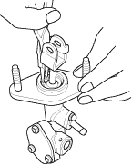
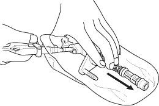
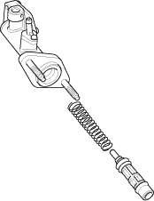

NOTE:
- Refer to the Exploded View, as needed during this procedure.
- Do not spill brake fluid on the vehicle; it may damage the paint; if brake fluid does contact the paint, wash it off immediately with water.
- Clean all parts in brake fluid and air dry; blow out all passages with compressed air.
- Before reassembling, check that all parts are free of dust and other foreign particles.
- Replace parts with new ones whenever specified to do so.
- Make sure no dirt or other foreign matter is allowed to contaminate the brake fluid.
- Do not mix different brands of brake fluid as they may not be compatible.
- Do not reuse the drained fluid. Use only clean DOT 3 or 4 brake fluid.
- Pry the circlip off the clutch master cylinder.

- Carefully remove the piston by applying air pressure through the clutch line hole.


- Slide the piston assembly into the clutch master cylinder.

- Install the circlip in the groove of the clutch master cylinder.